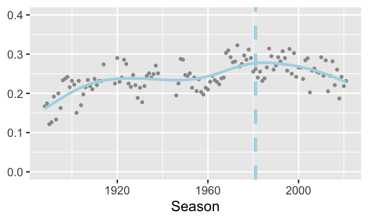
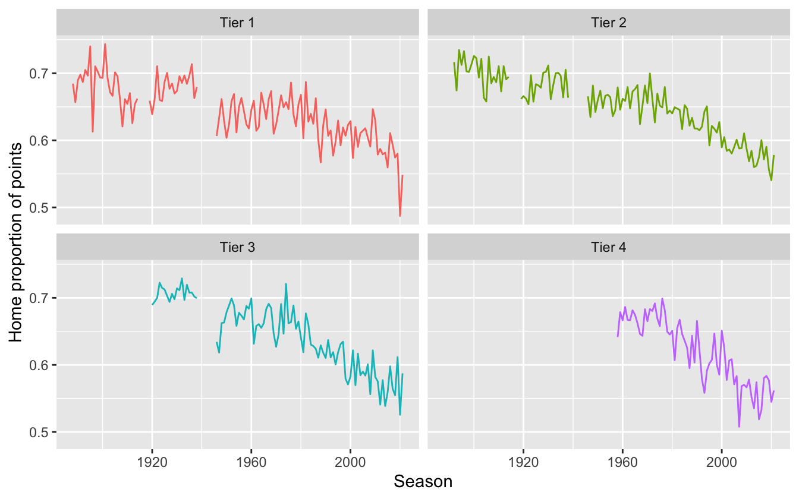
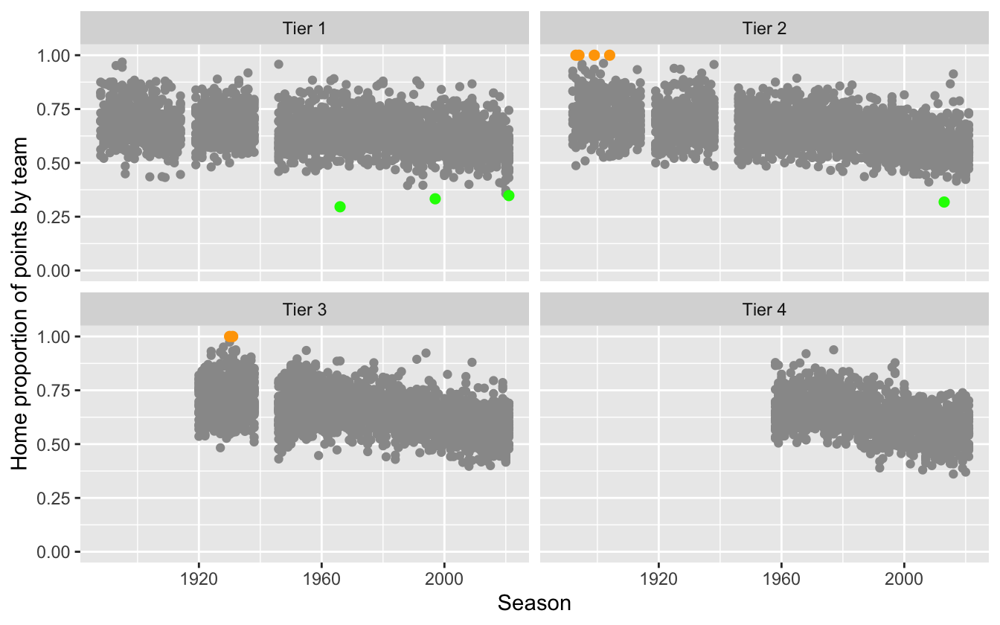
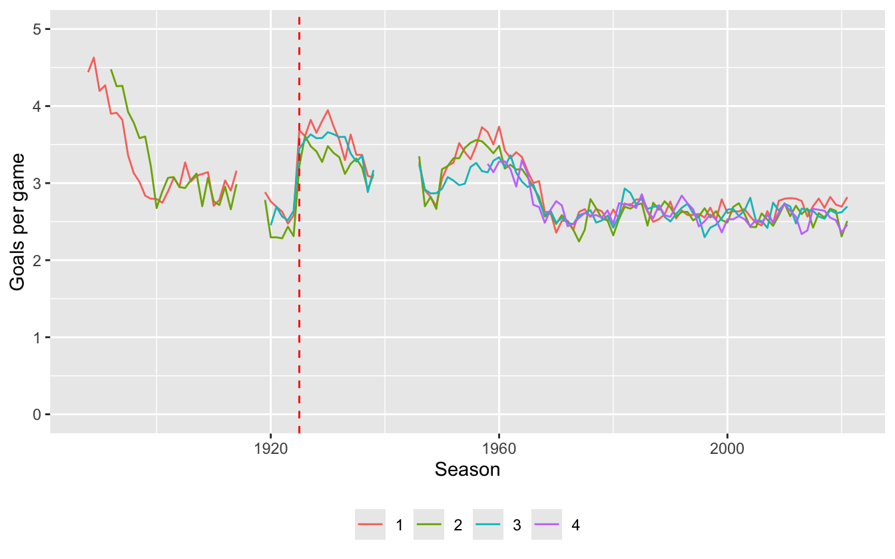
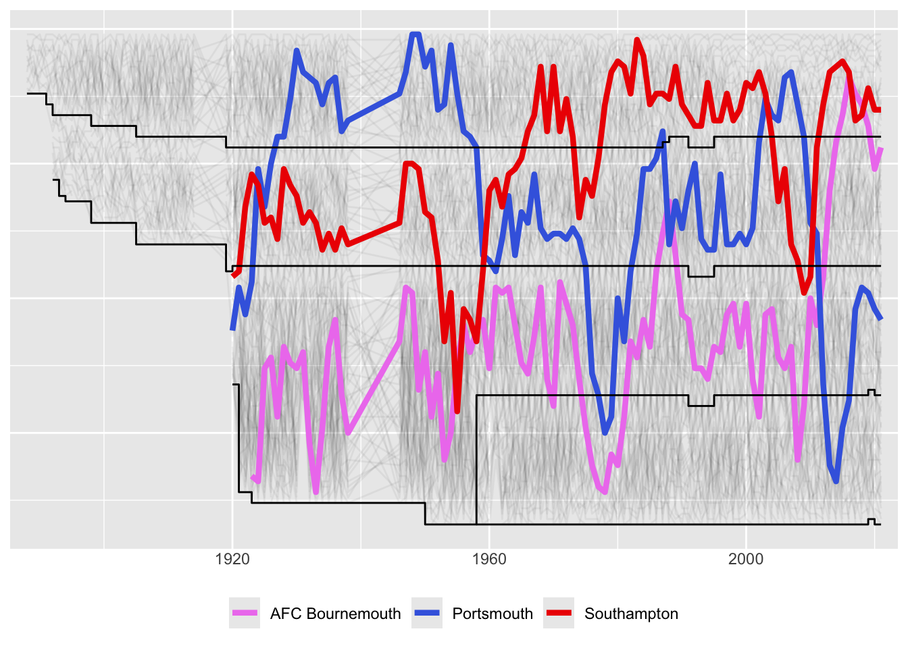
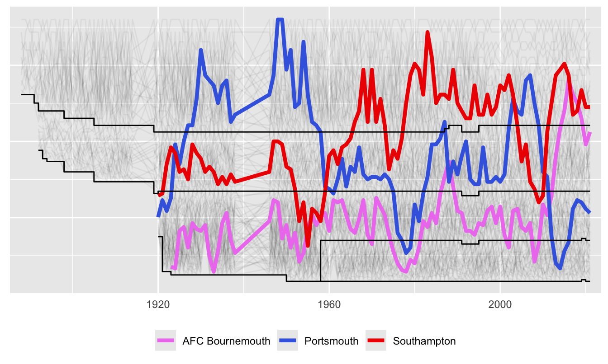
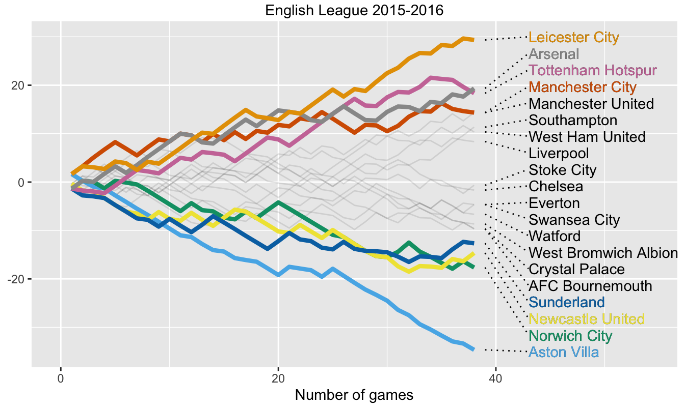
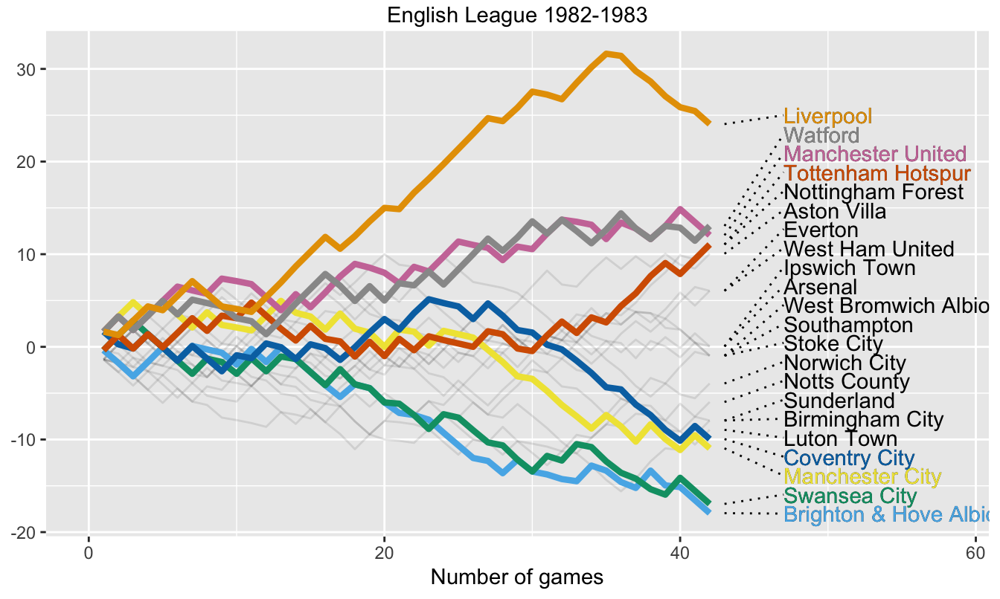
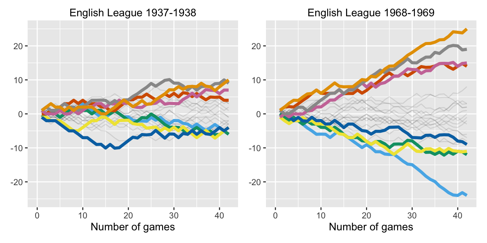

16 Watching soccer—the English leagues
“Football: it’s a funny old game.”
Background The English soccer league is the oldest in the world, the first season being 1888-89.
Questions Are there more draws now than before? Has home advantage always been the same? Do teams score fewer goals now? Can we display the histories of teams over the years? How do teams perform over a season?
Sources The engsoccerdata package contains results for all English soccer games in the top four tiers from the 1888-89 season to the 2021-22 season (Curley (2022))
Structure Results of 203956 games summarised in 12 variables
16.1 History of the English football leagues since 1888
The English league started out with one division of 12 teams in 1888 and quickly added another in 1892. After the First World War a third division started and this was doubled and split into North and South divisions one year later. In 1958 the two third divisions were combined and split into national third and fourth divisions. In 1992 the old first division became the Premier League and the other divisions also changed their names (and again later). For simplicity’s sake this report, like the dataset, refers to the different levels as the four tiers. Seasons are denoted by the year they began, so 2021-22 is referred to as 2021.
Much information on the intricate details of football history can be found on the Wikipedia sites for individual league seasons. These have been very helpful for explaining how the league developed and for understanding various initially surprising features. The maintainer of the package, James Curley, has published several insightful articles on the 538 website using the dataset (Curley (2016)).
Code
data(england)
esd <- as_tibble(england)
esd <- esd %>% mutate(Date=ymd(Date), tier=factor(tier))
allhome <- esd %>% mutate(team = home,
opp = visitor,
GF=hgoal,
GA=vgoal,
venue="home")
allaway <- esd %>% mutate(team = visitor,
opp = home,
GF=vgoal,
GA=hgoal,
venue="away")
allboth <- rbind(allhome,allaway) %>% mutate(GD = GF-GA, result=(GD>0)*1 + (GD==0)*0.5) %>%
select(Date, Season, division, tier, team, opp,
GF, GA, GD, result, venue)16.2 How have numbers of draws changed?
Code
Draws <- esd %>% group_by(Season, tier) %>%
summarise(ngames=n(), draws=sum(result=="D"), drx=draws/ngames)
ggplot(Draws %>% filter(tier %in% c(1)), aes(Season, drx)) + geom_point(size=0.75, colour="grey60") + ylab(NULL) + geom_vline(xintercept=1981, colour="#add8e6", linetype="dashed", linewidth=1.25) + ylim(0, 0.4) + stat_smooth(method = "gam", formula = y ~ s(x), colour="#add8e6", se=FALSE)
Figure 16.1: Rate of draws over the years in the English league’s top tier with a gam (general additive model) smooth
The proportion of drawn games in the top tier climbed until the First World War. Afterwards it remained relatively constant until the 1960s, when it rose again. After the introduction of three points for a win in 1981 (the vertical dashed line) it dropped slightly again. There was a lot of variability by season.
Code
data(italy)
DrawsI <- italy %>% mutate(result=(hgoal>vgoal)*1+(hgoal==vgoal)*0.5) %>%
group_by(Season) %>% summarise(ngames=n(), draws=sum(result==0.5), drx=draws/ngames)
data(spain)
DrawsS <- spain %>% mutate(result=(hgoal>vgoal)*1+(hgoal==vgoal)*0.5) %>%
group_by(Season) %>% summarise(ngames=n(), draws=sum(result==0.5), drx=draws/ngames)
drEIS <- ggplot(Draws %>% filter(tier==1), aes(Season, drx)) + labs(y=NULL) + ylim(0, 0.4) +
stat_smooth(method = "gam", formula = y ~ s(x), colour="#add8e6", se=FALSE) +
geom_vline(xintercept=1981, colour="#add8e6", linetype="dashed", linewidth=1.25) +
geom_smooth(data=DrawsI, aes(Season, drx), method = "gam", formula = y ~ s(x),
colour="blue", se=FALSE) +
geom_vline(xintercept=1994, colour="blue", linetype="dashed") +
geom_smooth(data=DrawsS, aes(Season, drx), method = "gam", formula = y ~ s(x),
colour="#E00000", se=FALSE) +
geom_vline(xintercept=1995, colour="#E00000", linetype="dashed")
drEIS
Figure 16.2: Smooths of the rates of draws for the top tiers in Italy (dark blue), England (light blue), and Spain (red)
The rates of draws in other countries were sometimes quite different as Figure 16.2 shows. The corresponding dotted lines show when the 3 points for a win rules were introduced. Italy had a higher rate of draws, particularly in the 1970s and 1980s, but this was declining before the new rule came in. The rate in Spain was lower, rose briefly above the English rate, then fell again. For the most recent data considered here, the rates of draws for Italy and England are about equal and Spain’s rate is the highest of the three leagues for the first time.
16.3 How big is home advantage?
Home advantage is a common feature of team sports (Gómez-Ruano et al. (2022)). One way to measure it is to consider the proportion of a team’s points won at home. As the number of points awarded for a win was increased in 1981 from 2 to 3, the proportions before and after 1981 would not be comparable. Figure 16.3 assumes that a win was always worth 3 points.
Code
HA3a <- allboth %>% filter(venue=="home") %>% group_by(Season, tier) %>% summarise(ng=n(), nh=sum((result==1)*3 + (result==0.5)*1), na=sum((result==0)*3 + (result==0.5)*1), HomeProportion=nh/(nh+na))
HA3a1 <- complete(data.frame(HA3a), Season=full_seq(Season, 1), tier)
levels(HA3a1$tier) <- c("Tier 1", "Tier 2", "Tier 3", "Tier 4")
ggplot(HA3a1, aes(Season, HomeProportion, group=tier, colour=tier)) + geom_line() +
ylab("Home proportion of points") + facet_wrap(vars(tier )) + scale_y_continuous(breaks=seq(0.5, 0.8, 0.1)) +
theme(legend.position="none")
Figure 16.3: Proportions of points won at home over time in the various tiers of the English league
The two striking features are the relatively steady decline since 1980 for the lower three tiers and the dramatic drop to below 50% in the Premier League in season 2020-21. Most of the 2020-21 Premier League games were played without fans because of Covid, so an important factor in home advantage disappeared. The sharp drops in levels in tiers 1 and 3 when the leagues restarted after the Second World War are a little surprising: why would that have happened? There is quite a lot of variability over the years and some relatively extreme values.
The home and away records for individual teams can also be calculated and Figure 16.4 shows the results for the four tiers separately (the gaps are the First and Second World Wars).
Code
HA3x <- allboth %>% group_by(Season, tier, team, venue) %>%
summarise(ng=n(), np=sum((result==1)*3 + (result==0.5)*1))
HA3y <- pivot_wider(HA3x %>% select(-ng), names_from="venue", values_from="np")
HA3y <- HA3y %>% mutate(HomeProportion=round(home/(home+away),3))
levels(HA3y$tier) <- c("Tier 1", "Tier 2", "Tier 3", "Tier 4")
HA3y1 <- data.frame(HA3y %>% filter(HomeProportion > 0.999))
HA3y2 <- HA3y %>% filter(HomeProportion < 0.35)
socHX <- ggplot(HA3y, aes(Season, HomeProportion)) + geom_point(colour="grey60") + facet_wrap(~tier, nrow=2) + ylim(0,1) + geom_point(data=HA3y1, colour="orange", size=2) + geom_point(data=HA3y2, colour="green", size=2) + ylab("Home proportion of points by team")
socHX
Figure 16.4: Proportions of points won at home for every team for every season
The overall trend is the same as in Figure 16.3 (but the vertical scales are different as these are rates for individual teams not for averages). There are some striking individual outliers. The four outliers in the early days of the second division with a home proportion of 1 (they got no points away from home), and the two from the third division later on, have been drawn bigger and coloured orange. They were:
Season tier team away home HomeProportion
1 1893 Tier 2 Northwich Victoria 0 12 1
2 1894 Tier 2 Crewe Alexandra 0 13 1
3 1899 Tier 2 Loughborough 0 9 1
4 1904 Tier 2 Doncaster Rovers 0 11 1
5 1930 Tier 3 Nelson 0 25 1
6 1931 Tier 3 Wigan Borough 0 10 1They all finished last except for Wigan Borough in 1931, who folded. In the first season after the Second World War Leeds United drew one away game and lost the other 20 in the first division (the top tier), although they managed six wins and five draws at home. (And yes, they finished last as well.)
The teams with the worst relative home record (proportions less than 0.35) have been drawn bigger and coloured green. They were:
Season tier team away home HomeProportion
1 1966 Tier 1 Blackpool 19 8 0.296
2 1997 Tier 1 Crystal Palace 22 11 0.333
3 2013 Tier 2 Birmingham City 30 14 0.318
4 2021 Tier 1 Watford 15 8 0.348All were relegated bar Birmingham, who survived on goal difference.
16.4 Have the numbers of goals scored gone down?
The number of goals scored per game in the first few years of the league was a lot higher than now, but it declined quickly. In 1925 the offside law was changed and that led to a short-term dramatic increase. After the Second World War levels rose again to peak around 1960. There was then a steady decline until 1970 and since then goal scoring has remained fairly constant, close to 2.5 goals a game. This is all shown in Figure 16.5.
Code
SGoals <- allboth %>% group_by(Season, tier) %>% summarise(gg=sum(GF+GA), ngames=n(), GPG=gg/ngames)
SG <- complete(data.frame(SGoals), Season=full_seq(Season, 1), tier)
ggplot(SG, aes(Season, GPG)) + ylim(0,5) + ylab("Goals per game") +
geom_line(aes(group=factor(tier), colour=factor(tier))) + theme(legend.position="bottom", legend.title=element_blank()) +
geom_vline(xintercept=1925, linetype="dashed", colour = "red")
Figure 16.5: The numbers of goals per game for the four tiers of the English league (the change in the offside law is marked with a red dashed line)
16.5 How well have teams performed over the years?
Everyone interested in football has their own favourite team and remembers the times their team was strongest. There is also a lot of interest in local rivalries. The following graphics use league tables for every division and give teams an overall ranking for each season. The top teams come from the first tier, the next ones from the second tier, and so on. For the period when there were two third tiers, the Third Divisions North and South, the tables for the two have been interwoven and the rankings estimated accordingly.
Code
newX <- allboth %>%
group_by(Season, team) %>%
mutate(gameno = dense_rank(Date)) %>%
arrange(Season, team, gameno) %>%
mutate(CumGF = cumsum(GF), CumGA = cumsum(GA), CumGD = cumsum(GD)) %>%
select(Season, tier, division, team, gameno, result, CumGF, CumGA, CumGD)
newY <- newX %>% group_by(Season, team) %>%
mutate(pts = (result==1)*(Season < 1981)*2 + (result==1)*(Season > 1980)*3 +
(result==0.5)*1, Cumpts = cumsum(pts), GoalAve=CumGF/CumGA)
Z1 <- newY %>% ungroup() %>% filter(Season < 1976) %>%
arrange(Season, division, gameno, desc(Cumpts), desc(GoalAve))
Z2 <- newY %>% ungroup() %>% filter(Season > 1975) %>%
arrange(Season, division, gameno, desc(Cumpts), desc(CumGD))
Zall <- rbind(Z1, Z2)
Zall <- Zall %>%
mutate(drank=ave(as.character(team), Season, division, gameno, FUN=seq_along), drank=as.numeric(drank))
aZ1 <- Zall %>% filter(!(Season==2019 & tier %in% c("3", "4"))) %>% group_by(Season, division) %>% filter(gameno==max(gameno))
aZ1 <- aZ1 %>% ungroup() %>% arrange(Season, tier, desc(Cumpts), desc(CumGD)) %>%
mutate(lrank=ave(as.character(team), Season, FUN=seq_along), lrank=as.numeric(lrank))
zy <- Zall %>% filter(Season==2019 & tier %in% c("3", "4"))
zy1 <- zy %>% group_by(division, team) %>% filter(gameno==max(gameno)) %>% mutate(ptsPg=Cumpts/gameno)
zy2 <- zy1 %>% ungroup() %>% group_by(division) %>% arrange(division, desc(ptsPg), desc(CumGD))
zy3 <- zy2 %>% mutate(lrank=ave(as.character(team), FUN=seq_along), lrank=as.numeric(lrank) + 44 + 23*(division==4))
aZg <- zy3 %>% select(-ptsPg) %>% ungroup()
aZz <- rbind(aZ1, aZg)
aZz <- aZz %>% mutate(srank=lrank^0.5)
aZM <- complete(aZz, Season, team)
nTeams <- Zall %>% filter(gameno==1) %>% group_by(Season, tier) %>% summarise(nt=n()) %>%
mutate(cnt=cumsum(nt), snt=cnt^0.5)
nD <- split(nTeams, nTeams$tier)Until 1976 teams equal on points were ranked on the ratio of the number of goals they scored to the number their opponents scored. This was called, misleadingly, goal average. From 1976 on, goal difference was used. The rankings used here reflect these rules. Goal average was introduced in 1894. Before that there was no official way of ranking teams with equal points. These tables use goal average for those years. You would think it might have been an issue as in the very first season with 12 clubs, there were three pairs on equal points. What are the chances of that? Two teams finished at the foot of the table on equal points, Notts County and Stoke City. Notts County had the better goal average and Stoke City the better goal difference. It did not matter, both—and the two teams above them—had to apply for re-election. A more dramatic example arose in 1923. Huddersfield Town won on goal average from Cardiff City who would have won on goal difference (although only because they scored one more goal, the goal differences were the same). It would have been the only occasion a team based outside England won the English League Championship.
There was one further problem. In season 2019-20 not all games were completed in the bottom two tiers because of the disruption caused by Covid. The teams did not all play the same number of games and final league positions were decided by the ratio of points won per game and then goal difference.
The rankings of all teams are plotted in light grey in the background and the selected teams are plotted in colour in the foreground, ghostplotting. (Specifying colours to match team colours and keep the teams distinct is easier for some groups of teams than for others.) The lowest level of each tier is marked with a black line.
Code
aS <- aZM %>% filter(team %in% c("Portsmouth", "Southampton", "AFC Bournemouth"))
ggplot(aZM, aes(Season, lrank)) + geom_line(aes(group=team), alpha=0.05) +
geom_line(data=aS, aes(Season, lrank, group=team, colour=team), linewidth=1.5) +
scale_colour_manual(values=c("violet", "royalblue", "red2")) +
theme(legend.position="bottom", legend.title=element_blank(),
axis.ticks = element_blank(), axis.text.y=element_blank()) +
labs(x=NULL, y=NULL) + scale_y_reverse() + scale_x_continuous(expand=c(0.02, 0)) +
geom_step(data=nD[[1]], aes(Season, cnt)) + geom_step(data=nD[[2]], aes(Season, cnt)) +
geom_step(data=nD[[3]], aes(Season, cnt)) + geom_step(data=nD[[4]], aes(Season, cnt))
Figure 16.6: Comparing the three South Coast teams: Bournemouth, Portsmouth, and Southampton
Of the three South Coast teams, Portsmouth was the most successful for a long time (including two league titles). Southampton was mostly best from the 1960s on. They briefly dropped to the third tier in 2009 from which they bounced straight back, just as Portsmouth were going up and down in the opposite direction. Bournemouth have pretty well always been below the other two until the last few years.
There is an unusual pattern in the line dividing the top and second tiers around 1990, shortly before the Premier League, replacing the old First Division, was introduced. The First Division had 22 members in 1986-87, 21 in 1987-88, and 20 in 1988-89, returning to 22 teams in its last season, 1991-92. The Premier League began in season 1992-93 with 22 members, but dropped to 20 members after four seasons. These changes were doubtless part of the ongoing negotiations at the time about the distribution of television money to the clubs. The minor bump in the lines dividing the bottom two divisions in 2019 is because Bury were expelled for insolvency in August 2019 before they had played any games.
Plots of historical trajectories of team performance can be found on various Wikipedia sites for individual teams.
Linear ranks mean that the difference between first and second at the top gets the same weight as any difference between consecutive rankings. To emphasise differences at the top more, the scale can be stretched using a square root function as in Figure 16.7. It is now clearer that Southampton did not ever win the league (they finished second in 1983).
Code
ggplot(aZM, aes(Season, srank)) + geom_line(aes(group=team), alpha=0.05) +
geom_line(data=aS, aes(Season, srank, group=team, colour=team), linewidth=1.5) +
scale_colour_manual(values=c("violet", "royalblue", "red2")) +
theme(legend.position="bottom", legend.title=element_blank(),
axis.ticks = element_blank(), axis.text.y=element_blank()) +
labs(x=NULL, y=NULL) + scale_y_reverse() + scale_x_continuous(expand=c(0.02, 0)) +
geom_step(data=nD[[1]], aes(Season, snt)) + geom_step(data=nD[[2]], aes(Season, snt)) +
geom_step(data=nD[[3]], aes(Season, snt)) + geom_step(data=nD[[4]], aes(Season, snt))
Figure 16.7: Comparing Bournemouth, Portsmouth, and Southampton on a square root scale
16.6 Wormcharts show league progress over a season
League tables give a snapshot of the current positions in a league competition. Wormcharts show how the positions of the teams changed over time and, if drawn for a full season, show the paths by which the top and bottom teams reached their final positions. The wormcharts drawn here use the number of games played as the time axis. An alternative would be to use the actual dates games were played. The advantage would be historical accuracy. The disadvantage would be making it harder to standardise over time, as teams have often played slightly different numbers of games by different stages of a season. The vertical axis measures the difference between the number of points a team has achieved in that number of games and the average number of points across all teams.
16.6.1 Leicester City are Champions for the first time!
Figure 16.8 shows the how teams fared in the Premier League in season 2015-2016. The winners, to everyone’s surprise, were Leicester City. It was the first time they had won the league title since they were elected to the Football League in 1894 and they were the first new team to win the top division since Nottingham Forest in 1977-78.
Code
wormchart <- function(data, Seax, divx, nsel) {
SeasonX <- data %>% filter(Season==Seax, division==divx)
SeasonX <- SeasonX %>% ungroup() %>% group_by(gameno) %>% mutate(meanP=mean(Cumpts))
nteams <- with(SeasonX, nlevels(factor(team)))
ngames <- max(SeasonX$gameno)
pal1 <- palette_pander(2*nsel)
ZY <- SeasonX %>% filter(gameno==ngames)
SelTeam <- ZY %>% filter(drank < (nsel+1) | drank > (nteams-nsel)) %>% select(team, drank)
Sx <- SeasonX %>% filter(gameno < (ngames + 1))
Sy <- Sx %>% filter(team %in% SelTeam$team)
Sy <- within(Sy, Team <- reorder(team, -drank, last))
lS <- ZY %>% summarise(ul=ceiling(max(Cumpts-meanP)), ll=floor(min(Cumpts-meanP)))
ZY <- ZY %>% mutate(xx=gameno+2, yy=lS$ul-(drank-1)*(lS$ul-lS$ll)/(nteams-1))
ZYt <- ZY %>% filter(team %in% SelTeam$team)
ggplot(Sx, aes(gameno, (Cumpts-meanP))) + geom_line(aes(group=team), alpha=0.1) +
labs(y=NULL, x="Number of games") + xlim(0, ngames+16) + geom_line(data=Sy, aes(group=Team, colour=Team), linewidth=1.5) + scale_colour_manual(values=pal1) + geom_text(data=ZY, aes(xx+3, yy, label=team), hjust=0) + geom_segment(data=ZY, aes(x=gameno+1, xend=gameno+5, y=Cumpts-meanP, yend=yy, group=team), linetype=3) + geom_text(data=ZYt, aes(xx+3, yy, label=team, colour=team), hjust=0) + ggtitle(paste0("English League ", SeasonX$Season,"-",SeasonX$Season +1)) + theme(legend.position="none", plot.title = element_text(vjust = 2))
}
w15x <- wormchart(Zall, 2015, 1, 4)
w15x
Figure 16.8: Team performances in points above/below the average in 2015-16
The chart shows that Leicester finished well clear at the end, ten points in front of second-placed Arsenal, and they led from the front for the last third of the season. At the other end of the table there was an even larger gap, with Aston Villa finishing bottom on 17 points, another 17 points behind the next team Norwich City.
For each round of games of a season (in the Premier League there are currently 20 teams and hence 38 rounds) the cumulative points up to then are recorded. The mean number of cumulative points across the teams is subtracted from each team’s total. A line of the chart shows a team’s cumulative performance relative to the average performance. If some kind of adjustment like this (the median could have been used) is not done, all the teams’ lines increase in steps, making a fanned-out diagonal up the page. A lot of plotting space is then not used and comparisons are more difficult. The assumption is made that all games of a round take place at the same time, which is not always true in the Premier League.
Only the four teams finishing at the top of the table and the four finishing at the foot of the table are coloured to make the display more readable. These numbers can, of course, be changed. In principle the line colours should match the colours of the teams. That would not work so well if, say, four teams playing in blue were all at the top—or bottom.
16.6.2 The 1982-83 season had a few surprises
The main story was that Liverpool won the league easily. What can also be seen in Figure 16.9 is that they did very poorly in their last seven games, losing five and drawing two. When the league has already been won, the final games do not matter as much.

Figure 16.9: Team performances in points above/below the average in season 1982-83). There were 22 teams and each played 42 games.
Other stories include Coventry City’s disastrous run for the last third of the season. Checking the results reveals that they had one win, three draws, and eleven losses. One of the draws was with Liverpool after they were certain of winning the league. If you follow each of the eight teams picked out, then the performance of Manchester City, who were relegated, is unusual. They won their first three games and were top of the league at that stage. Almost halfway through the season, after 20 games, none of the three sides who were relegated at the end of the season were in the bottom three.
16.6.3 The most equal and unequal seasons
Individual default scales have been used for the vertical axes in Figures 16.8 and 16.9. To draw scales suitable for all years in which 22 teams competed for the Championship with two points for a win, the scale would have to cover from +26 (i.e. 68 points, Liverpool in 1978-79) down to \(-24\) (i.e. 18 points, Leeds United in 1946-47 and Queens Park Rangers in 1968-69). Curiously, Leeds United won the league in 1968-69 with 67 points, so they were involved in both of the low point seasons, albeit at different ends of the table.
It is interesting to look at how much of a common scale might be used in different seasons. The biggest range was 49 points in 1968-69, from QPR with 18 to Leeds with 67. The smallest range was 16 points in 1927-28 (from Middlesborough with 37 to Everton with 53) and in 1937-38 (from West Bromwich Albion and Manchester City with 36 to Arsenal with 52). Season 1937-38 had other unusual features. Manchester City scored 80 goals, more than any other team, and had been Champions the year before. All teams in 1937-38 won more points than the bottom four teams in 1968-69 and less points than the top four teams in 1968-69.
Code
Seax <- 1937; divx <- 1; nsel <- 4
SeasonX <- Zall %>% filter(Season==Seax, division==divx)
SeasonX <- SeasonX %>% ungroup() %>% group_by(gameno) %>% mutate(meanP=mean(Cumpts))
nteams <- with(SeasonX, nlevels(factor(team)))
ngames <- max(SeasonX$gameno)
pal1 <- palette_pander(2*nsel)
ZY <- SeasonX %>% filter(gameno==ngames)
SelTeam <- ZY %>% filter(drank < (nsel+1) | drank > (nteams-nsel)) %>%
select(team, drank)
Sx <- SeasonX %>% filter(gameno < (ngames + 1))
Sy <- Sx %>% filter(team %in% SelTeam$team)
Sy <- within(Sy, Team <- reorder(team, -drank, last))
lS <- ZY %>% summarise(ul=ceiling(max(Cumpts-meanP)), ll=floor(min(Cumpts-meanP)))
ZY <- ZY %>% mutate(xx=gameno+2, yy=lS$ul-(drank-1)*(lS$ul-lS$ll)/(nteams-1))
ZYt <- ZY %>% filter(team %in% SelTeam$team)
w37s <- ggplot(Sx, aes(gameno, (Cumpts-meanP))) + geom_line(aes(group=team), alpha=0.1) +
labs(y=NULL, x="Number of games") + xlim(0, ngames) + ylim(-25, 25) +
geom_line(data=Sy, aes(group=Team, colour=Team), linewidth=1.5) +
scale_colour_manual(values=pal1) + geom_text(data=ZY, aes(xx+7, yy, label=team)) +
geom_segment(data=ZY, aes(x=gameno+1, xend=gameno+5, y=Cumpts-meanP, yend=yy,
group=team), linetype=3) + geom_text(data=ZYt, aes(xx+7, yy, label=team, colour=team)) + ggtitle(paste0("English League ", SeasonX$Season,"-",SeasonX$Season +1)) + theme(legend.position="none", plot.title = element_text(vjust = 2))
Seax <- 1968; divx <- 1; nsel <- 4
SeasonX <- Zall %>% filter(Season==Seax, division==divx)
SeasonX <- SeasonX %>% ungroup() %>% group_by(gameno) %>% mutate(meanP=mean(Cumpts))
nteams <- with(SeasonX, nlevels(factor(team)))
ngames <- max(SeasonX$gameno)
pal1 <- palette_pander(2*nsel)
ZY <- SeasonX %>% filter(gameno==ngames)
SelTeam <- ZY %>% filter(drank < (nsel+1) | drank > (nteams-nsel)) %>%
select(team, drank)
Sx <- SeasonX %>% filter(gameno < (ngames + 1))
Sy <- Sx %>% filter(team %in% SelTeam$team)
Sy <- within(Sy, Team <- reorder(team, -drank, last))
lS <- ZY %>% summarise(ul=ceiling(max(Cumpts-meanP)), ll=floor(min(Cumpts-meanP)))
ZY <- ZY %>% mutate(xx=gameno+2, yy=lS$ul-(drank-1)*(lS$ul-lS$ll)/(nteams-1))
ZYt <- ZY %>% filter(team %in% SelTeam$team)
w68s <- ggplot(Sx, aes(gameno, (Cumpts-meanP))) + geom_line(aes(group=team), alpha=0.1) +
labs(y=NULL, x="Number of games") + xlim(0, ngames) + ylim(-25, 25) +
geom_line(data=Sy, aes(group=Team, colour=Team), linewidth=1.5) +
scale_colour_manual(values=pal1) + geom_text(data=ZY, aes(xx+7, yy, label=team)) +
geom_segment(data=ZY, aes(x=gameno+1, xend=gameno+5, y=Cumpts-meanP, yend=yy,
group=team), linetype=3) + geom_text(data=ZYt, aes(xx+7, yy, label=team, colour=team)) + ggtitle(paste0("English League ", SeasonX$Season,"-",SeasonX$Season +1)) + theme(legend.position="none", plot.title = element_text(vjust = 2))
w37s + w68s
Figure 16.10: Wormcharts for the two seasons with extreme point ranges for the English 1st Division Championship with 22 teams and two points for a win between 1919-20 and 1980-81
Answers The proportion of drawn games has increased from the low initial rates, but not changed much on average over the past 40 years. Home advantage has declined, particularly for the lower tiers of the league. The numbers of goals scored has remained steady for the last 50 years. Wormcharts give an overview of how teams’ league positions change over a season.
Further questions Would using goal difference rather than goal average before 1976 ever have made a difference (and vice versa)? Which teams have spent the longest in each tier? Which teams have moved between tiers most often?
Graphical takeaways
- Graphics of time series should mark when the rules or context changes. Guidelines help. (Figures 16.1, 16.2, and 16.5)
- Drawing cases of interest bigger, in colour, and on top of other points makes for effective highlighting. (Figure 16.4)
- Transformations can be used to emphasise different parts of a scale. (Figure 16.7)
- Wormcharts are an illuminating way of displaying how a league progresses over a season. (Figures 16.8 to 16.10)